Acceso Seguro al Sistema y Reglas de Oro de Navegación
El sistema cuenta con aislamiento de sesión por pestaña y protección criptográfica para que cada trabajador opere de forma segura.
1. ¿Cómo iniciar sesión?
- Escribe tu Usuario o Correo (ej.
tomas_admin,encargado_ep1ocorredor_1). - Ingresa tu Contraseña de Seguridad.
- Resuelve la suma de verificación rápida (Captcha anti-bots) y pulsa Ingresar.
2. Seguridad por Pestaña (Aislamiento Estricto)
Por seguridad, si abres una nueva pestaña o ventana del navegador, el sistema siempre te pedirá iniciar sesión nuevamente. Nunca comparte ni hereda la sesión abierta en otra pestaña.
3. Atajo Rápido: Volver al Panel Principal al Instante
Sin importar en qué categoría, tabla o ventana te encuentres, puedes volver de inmediato a la galería principal con un solo clic en:
- El logo superior izquierdo "GRUPO ELÉCTRICO"
- El título "PANEL PRINCIPAL" en la barra izquierda
- El botón verde "Panel Operativo" en la barra izquierda
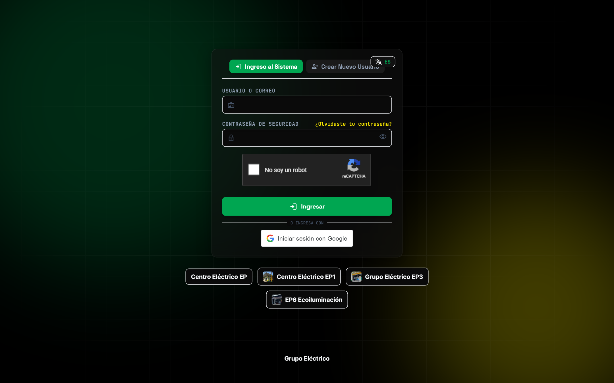
1. Manual del Administrador Global (@tomas_admin)
Control absoluto sobre las 4 sedes, catálogo maestro, categorías con fotografía, precios, disponibilidad por sede, traslados, auditoría y Dashboards.
Galería Visual de Categorías y Filtros por Sede
Al ingresar, el Administrador visualiza las 19 categorías especializadas con sus fotografías reales y el conteo exacto de productos activos. Todas las imágenes que subas aquí se sincronizan automáticamente para todos los Encargados de Sede.
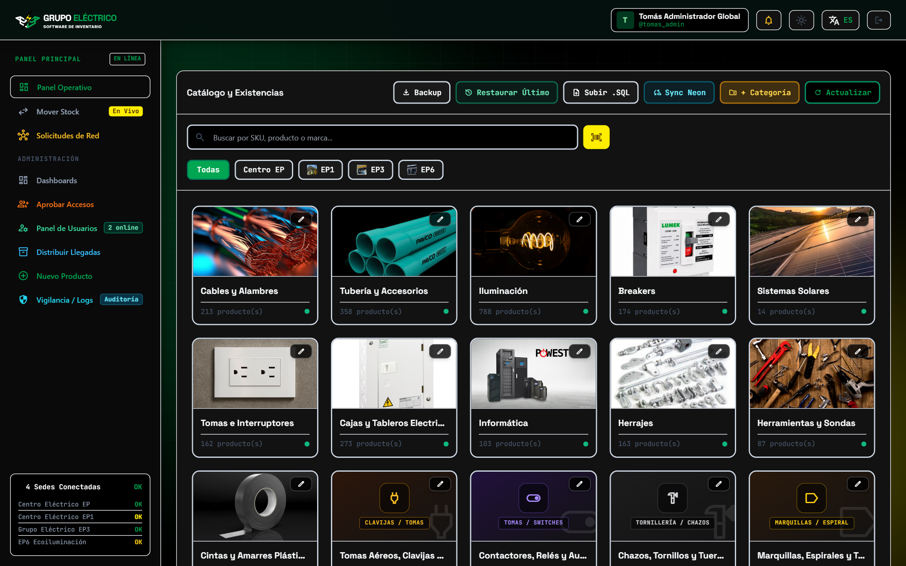
Búsqueda Exclusiva dentro de la Categoría
Cuando haces clic en una categoría (por ejemplo, Cables y Alambres), el sistema aplica tres mejoras de experiencia de usuario:
- 1. Auto-Scroll al Inicio: La pantalla sube automáticamente al primer producto de la categoría para que nunca aparezcas a mitad de página.
-
2. Encabezado Despejado: Se esconden los botones globales de arriba (Backup, Restaurar, + Categoría) para dejar una vista limpia enfocada en tu búsqueda, mostrando el indicador
Modo Búsqueda en "Cables y Alambres". -
3. Buscador Inteligente Acotado: Todo lo que escribas en la barra de búsqueda filtrará únicamente productos de esa categoría. Para regresar a la galería, pulsa la flecha
←o el logo superior.
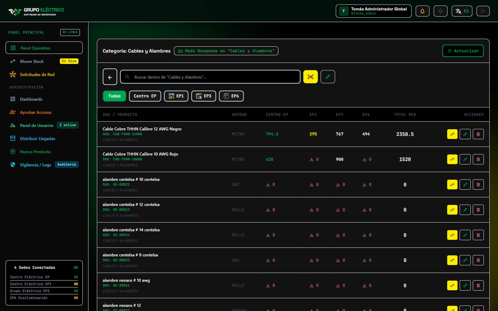
Botón [✏️ Categoría / Editar] y Switch "No maneja"
En cada producto tienes dos botones claramente diferenciados: el botón verde Categoría / Editar (para cambiar el producto de categoría, precio o configurar qué sedes lo venden) y el botón amarillo Sede (para trasladar unidades físicas entre sedes).
Se maneja en esta sede en EP3. En la tabla aparecerá la etiqueta gris "No maneja" sin alertas falsas.
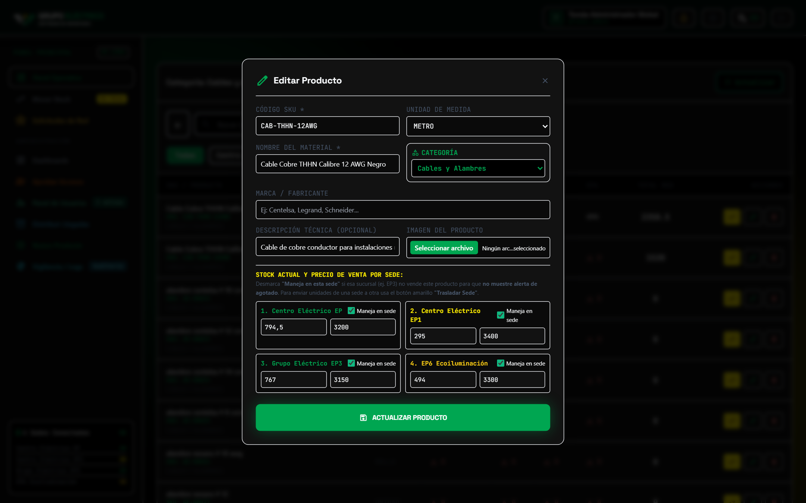
Botón [⇄ Sede / Mover Stock] con Corredor Opcional
Para pasar mercancía de un almacén a otro, pulsa Mover Stock en el menú izquierdo o el botón amarillo Sede en la fila del producto.
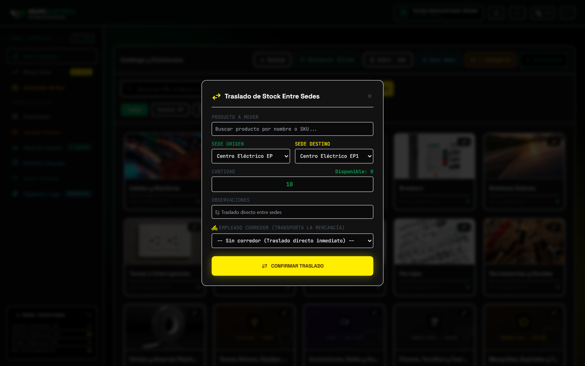
Dashboard en Tiempo Real e Historial Paginado (15 por página)
Desde el menú izquierdo Dashboards, accedes a las gráficas en vivo y a la exportación en Excel, PDF y CSV.
-
👁️ Botón "Revisar Últimos Movimientos": El panel inferior se mantiene cerrado para ahorrar memoria visual y solo se despliega cuando lo necesitas. Muestra 15 movimientos por página en tiempo real (vía WebSockets) con botones de paginación (
1, 2, 3, Siguiente ›). - 🗄️ Botón "Optimizar Historial (+2 años)": Archiva los movimientos con más de 24 meses en almacenamiento histórico (Cold Storage) sin perder trazabilidad y reconstruye los índices de PostgreSQL para mantener el sistema rápido durante 10 a 20 años.
- 📦 Distribuir Llegadas (+ Nueva Entrada): Al pulsar Distribuir Llegadas en la barra izquierda puedes auditar recepciones de proveedores o registrar una + Nueva Entrada directa de mercancía.
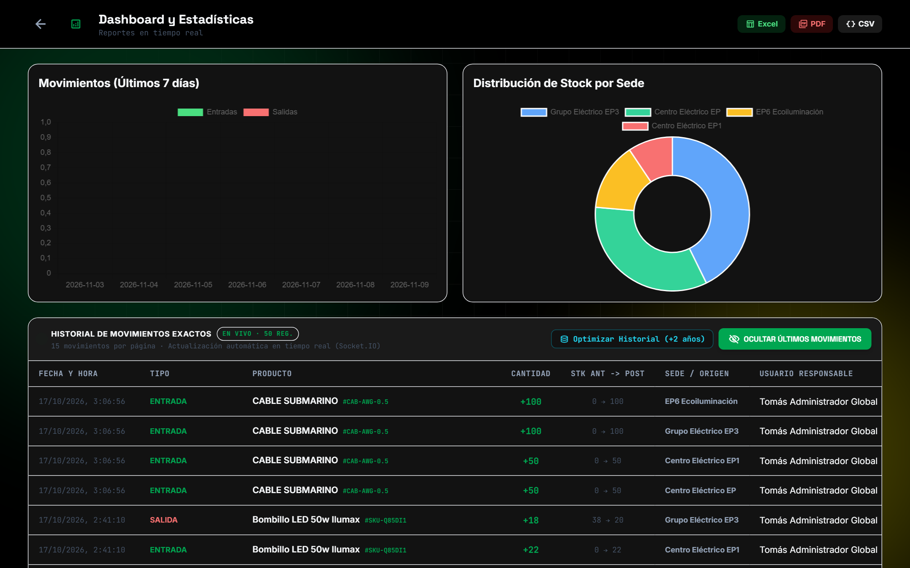
2. Manual del Encargado de Sede (EP / EP1 / EP3 / EP6)
Diseñado para los jefes de punto de venta: consulta ágil por categorías con fotos, solicitud de material a otras sedes, recepción de proveedores y envío de mercancía.
Galería de Categorías Sincronizada y Acciones de Sede
El Encargado visualiza exactamente las mismas categorías y fotografías configuradas por el Administrador, pero sin botones de edición ni borrado de catálogo para proteger la integridad de la base de datos.
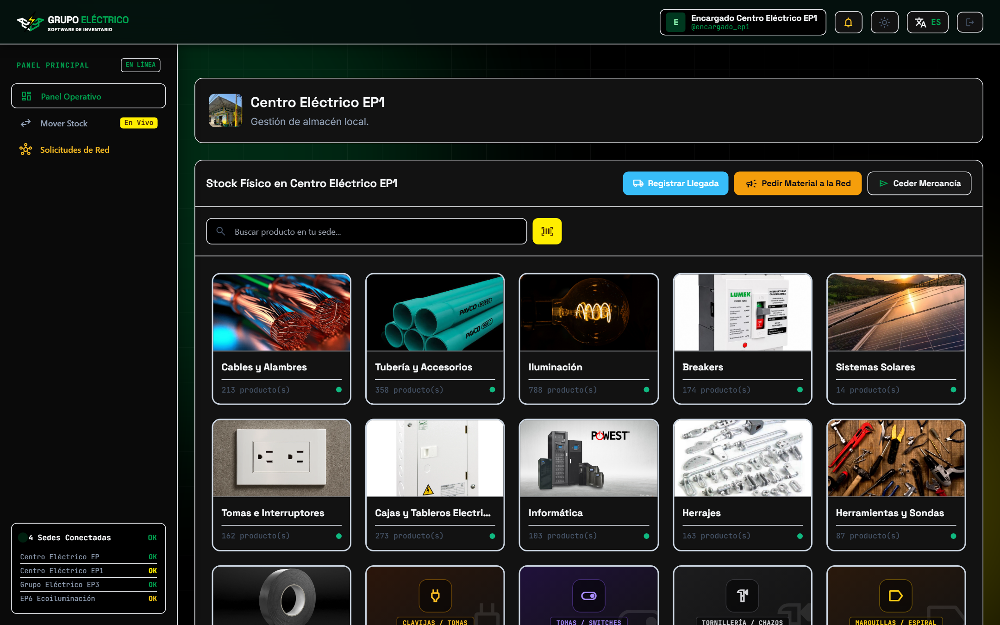
Búsqueda Acotada por Categoría y Escáner de Cámara
Al entrar a cualquier categoría (ej. Breakers), los botones superiores se ocultan para darte una pantalla despejada, la vista sube automáticamente al inicio y el buscador filtra únicamente dentro de esa categoría en tu sede. También puedes pulsar el botón amarillo Escanear para buscar con la cámara del celular o lector láser USB.
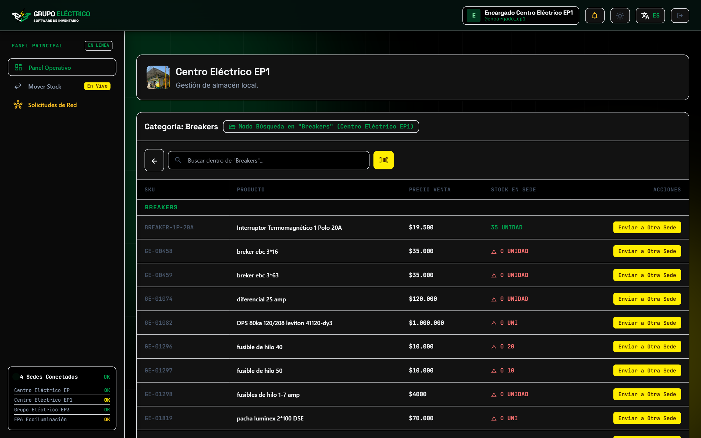
¿Cómo pedir material a las demás sedes?
Al pulsar Pedir Material a la Red, puedes agregar uno o varios productos (+ Agregar otro producto), indicar la cantidad requerida y el motivo de urgencia. Todas las demás sedes recibirán una notificación instantánea para despacharte el material.
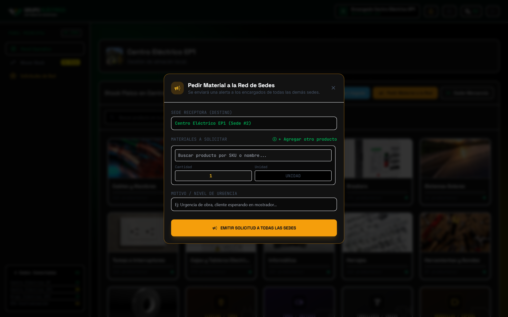
3. Manual del Empleado / Corredor Logístico (@corredor_1)
Interfaz de alta velocidad en 3 columnas para consulta de precios y existencias por sede, confirmación de entregas en tránsito y conteo físico de mercancía.
1. Consulta Rápida · 2. Misiones de Entrega · 3. Tareas de Conteo
-
💲 Columna 1 — Consulta de Precios y Stock por Sede: Escribe el nombre, código SKU o categoría para ver al instante el precio de referencia y las unidades disponibles en cada sede (
EP · EP1 · EP3 · EP6). - 🛵 Columna 2 — Misiones Activas y Traslados: Muestra claramente 1. Dónde recoger y 2. Dónde entregar cada solicitud asignada. Al entregar la mercancía en la sede destino, pulsa el botón verde "Confirmar Entrega en Sede Destino".
- 📋 Columna 3 — Tareas de Conteo (Recepciones): Cuando el Encargado te asigna revisar un pedido que llegó, aquí digitas cuántas unidades llegaron en buen estado y cuántas defectuosas.
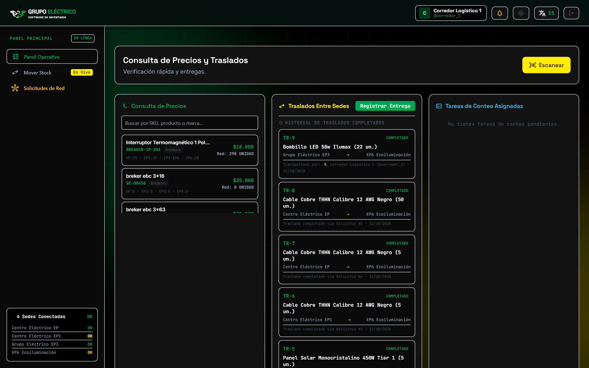
Uso de la Cámara en Celular, Tablet o Lector USB en PC
Al presionar el botón amarillo Escanear, se abre el lector inteligente compatible tanto con celulares/tablets como con computadores:
- 📷 En Celulares y Tablets: Permite elegir entre cámara trasera o frontal, alinear el código de barras dentro del recuadro amarillo y consultar o trasladar el producto automáticamente.
-
⌨️ En Computador sin Cámara o con Pistola Láser USB: Incluye un campo directo donde puedes disparar con el lector láser USB o escribir el código SKU y presionar
Enter.
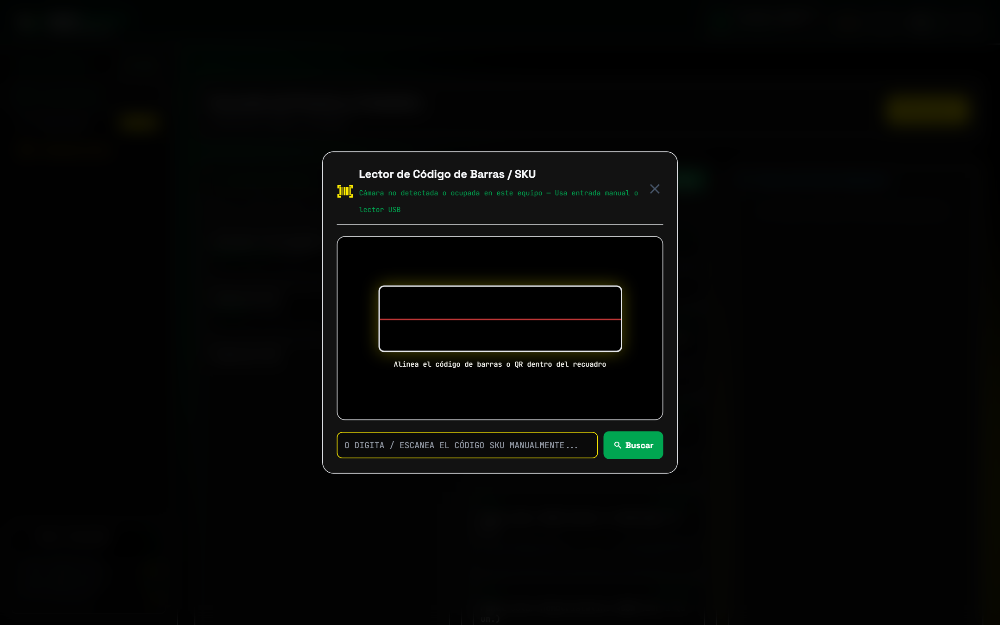